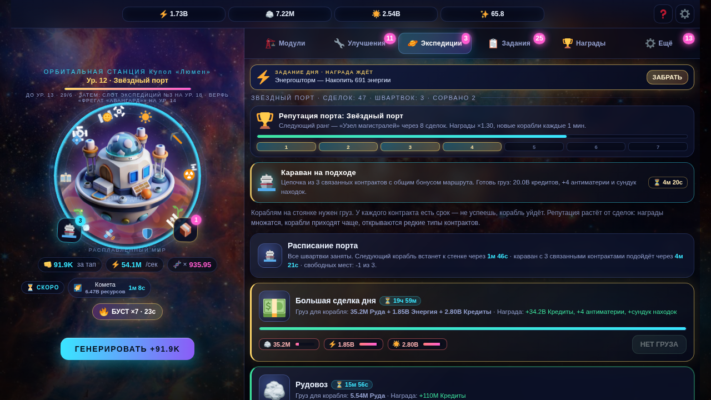

Cosmic Station — space idle game
Idle strategy: upgrade station modules, send ships for resources, research tech and prestige. Income runs while you are away.
Play now in your browser

About the game
Cosmic Station is an idle game about a space station. Modules produce resources every second, ships bring cargo, research unlocks new modules and efficiency. When growth slows down, prestige resets the station and gives permanent bonuses. Offline income is always counted.
What is inside
- Module-by-module station upgrade
- Ship expeditions for rare cargo
- Tech tree and permanent prestige bonuses
- Offline income and daily rewards
- No account needed, works offline
Where to play
- Right here in the browser: Cosmic Station — space idle game
- VK Play (VK Games) — instant play inside VK
- Yandex Games — no install, progress saved to a Yandex account
- RuStore — Android build with offline play
More games by the studio
Watermelon 2048: Merge Fruits · Cosmic Defender — Space Shooter Arcade · Flappy Cosmos — one tap space arcade · Candy Carnival — Match 3 Puzzle · Block Blitz — 8x8 block puzzle · Photo Pairs — memory match game
FAQ
Do I need to install the game?
No — it runs in the browser.
Do I need an account?
No. The game starts immediately, no sign-up.
Is there ads or in-app purchases?
Да, есть реклама и вознаграждаемые ролики за ускорение производства.
Does it work offline?
Да, офлайн-доход считается, даже когда игра закрыта.